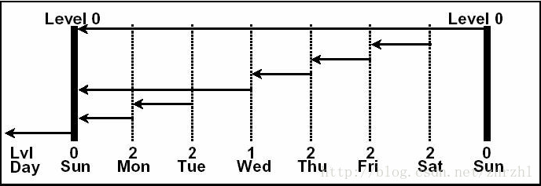

RMAN增量备份
增量备份至备份相对变化了的增量部分
以数据块为增量判断的最小单位
分为差异的增量备份和累积的增量备份
包括全部数据块的基础备份为0级增量备份
差异的增量备份以最近一次的0或1级备份为基础
累积的增量备份以最近一次的0级备份为基础
RMAN备份分为全备和增量备份两部分
增量备份:分为0 1 2级
ORACLE官方解释：
A level 1 incremental backup can be either of the following types:
Adifferential backup, which backs up all blocks changed after the most recentincremental backup at level 1 or 0
A cumulative backup, which backs up all blocks changed after the most recentincremental backup at level 0
Incrementalbackups are differential by default. 默认是差异备份
在differential（差异）模式下（缺省）
0=全备
1=差异增量 上次全备或LV1至今的增量（无论是否有，有N次LV2的备份，一律从上次lv1或0至今的变化）0/1 ~ NOW
2=累积增量 上次任意级别备份至今的增量（任意一次备份至今）0/1/2 ~ NOW

在cumulative（累积的）模式下，
0=全备
1=上次全备至今的增量（无论是否有，有N次LV1的备份，一律从全备至今的变化）0 ~ NOW
2=上次0或1级别备份至今的增量（2次LV2间的累积，也汇总备份至今）0/1~ NOW （differential下的LV1）

进行0级备份，可以针对全库也可以针对部分表空间
backup incremental level=0 database;
backup incremental level=0 tablespace users;
执行增量备份
差异增量备份，默认方式
backup incremental level=1 database;
累积增量备份
backup incremental level=1 cumulative database;
RMAN增量备份读取整个数据库文件进行块级别检查时要花费大量时间，可以通过设置快改变跟踪文件，避免进行备份时全部对比块。建议配置这个。
alter database enable block change tracking using file '/oracle/11g/oradata/mysql_master_1003306/orcl.trc';
alter database disable block change tracking; ##同时会删除orcl.trc文件
恢复直接使用restore database，recover database即可